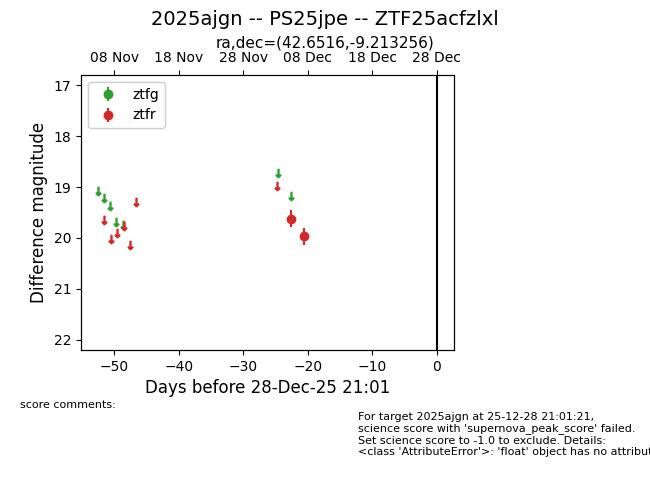
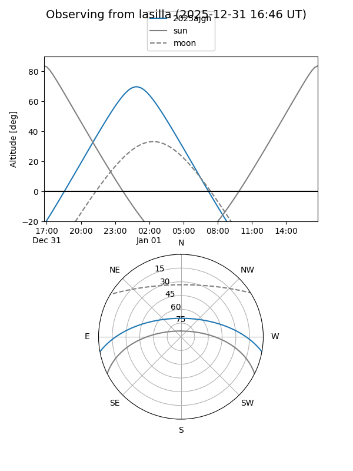
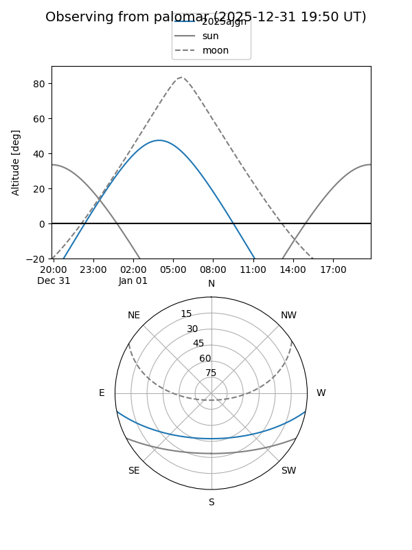

2025ajgn
Target 2025ajgn at 2025-12-28 21:02
Aliases and brokers:
FINK: fink-portal.org/ZTF25acfzlxl
Lasair: lasair-ztf.lsst.ac.uk/objects/ZTF25acfzlxl
ALeRCE: alerce.online/object/ZTF25acfzlxl
TNS: wis-tns.org/object/2025ajgn
YSE: ziggy.ucolick.org/yse/transient_detail/2025ajgn
alt names
ZTF25acfzlxl (ztf,fink_ztf)
2025ajgn (tns,yse)
PS25jpe (panstarrs)
Coordinates:
equatorial (ra, dec) = 42.6516,-9.21326
equatorial (HMS+DMS) = 02:50:36.38,-09:12:47.72
galactic (l, b) = (186.0969,-56.65806)
Flags:
Photometry:
last ztfr=19.97
2 ztfr detections
Lightcurve

Visibility


Additional plots